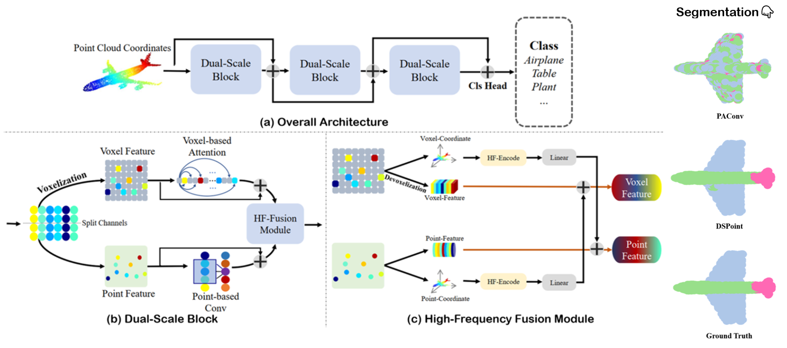
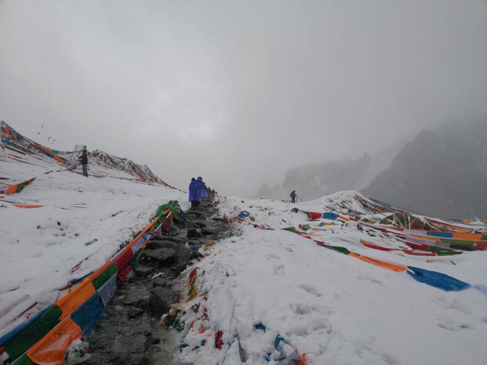
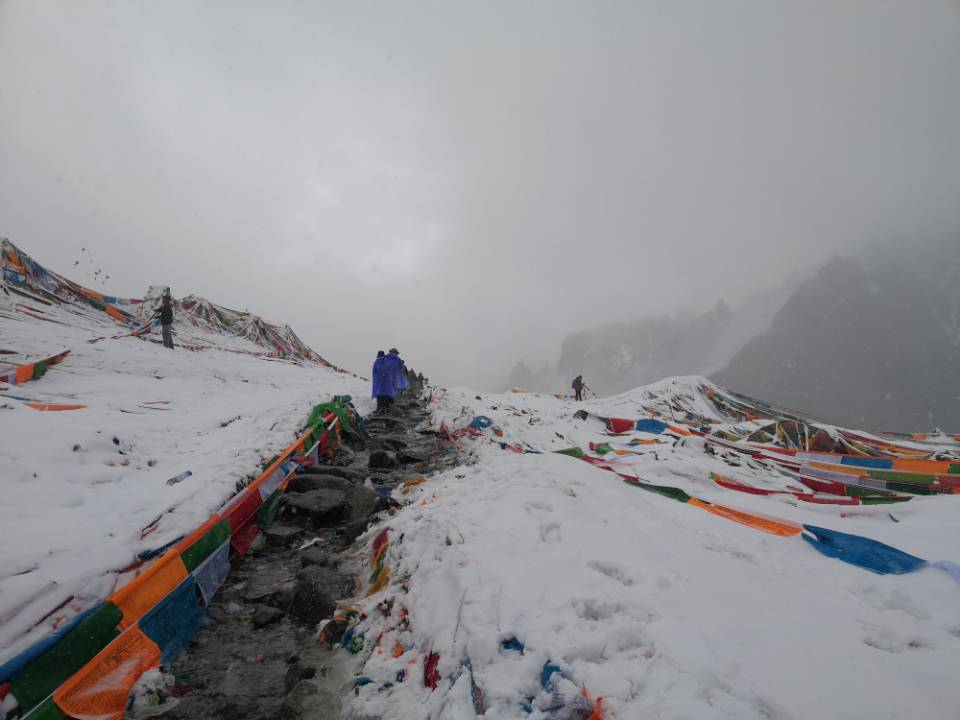
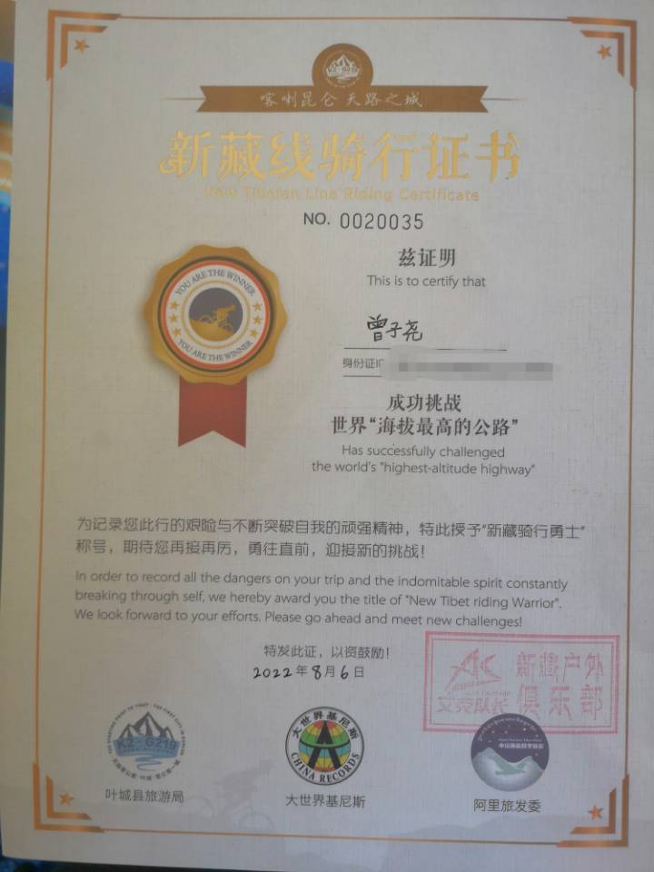
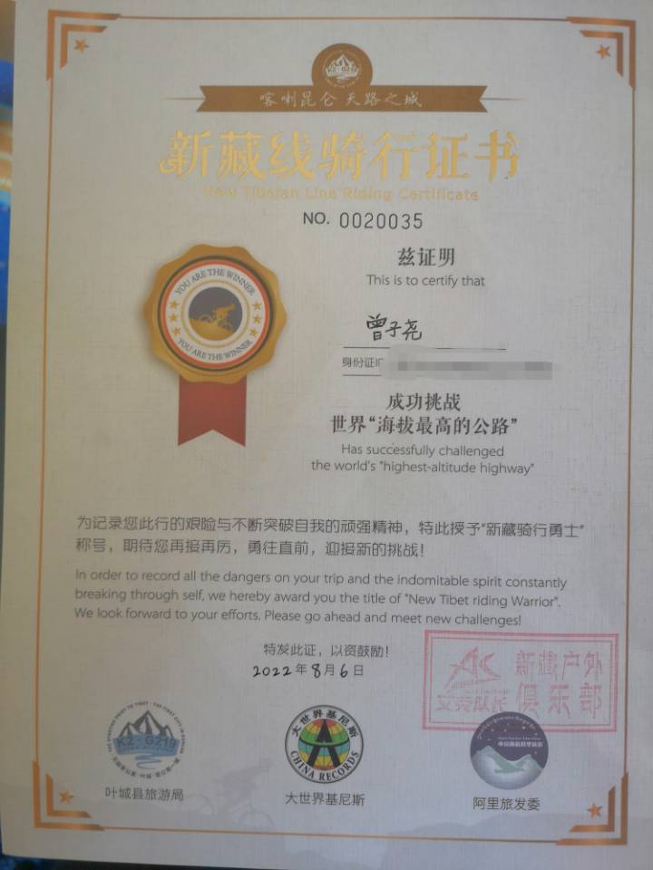

Ziyao (Adonis) Zeng 曾子尧
|
I'm a second-year Ph.D. student in Computer Science (2023 - [Expected] 2028) at Yale University, supervised by Prof. Alex Wong. Previous to that, I obtained my B.Eng. in Computer Science (2019 - 2023) at ShanghaiTech University, minor in Innovation and Entrepreneurship. I am an incoming PhD Research Intern at Nvidia Research, mentoring by Orazio Gallo. Previously, I interened with Prof. Jianbo Shi at UPenn GRASP Lab, with Prof. Xuming He at ShanghaiTech PLUS Group. I conduct research on Computer Vision, Machine Learning, and Robotics. I mainly focus on Multimodal Embodied AI inspired by human learning. Currently, my research mainly lies in Vision-Language Models for 3D Vision (Perception and Reconstruction). Google Scholar / GitHub / Yale Vision Lab Reviewer: CVPR, ICCV, ECCV, NeurIPS, ICLR, ICML Email: ziyao.zeng (at) yale.edu |
Website format from Xingyi Zhou.
Last updated April 2025
Research Overview
Publications
(* indicates equal contributions; Selected publications of "Language for 3D Vision" are highlighted.)2025
Patrick Rim, Hyoungseob Park, S. Gangopadhyay, Ziyao Zeng, Younjoon Chung, Alex Wong
CVPR 2025
Jingcheng Ni*, Weiguang Zhao*, Daniel Wang, Ziyao Zeng, Chenyu You, Alex Wong, Kaizhu Huang
arXiv technical report, 2025
2024
Ziyao Zeng, Jingcheng Ni, Daniel Wang, Patrick Rim, Younjoon Chung, Fengyu Yang, Byung-Woo Hong, Alex Wong
arXiv technical report, 2024
Ziyao Zeng, Yangchao Wu, Hyoungseob Park, Daniel Wang, Fengyu Yang, Stefano Soatto, Dong Lao, Byung-Woo Hong, Alex Wong
NeurIPS 2024
Fengyu Yang*, Chao Feng*, Daniel Wang*, Tianye Wang, Ziyao Zeng, Zhiyang Xu, Hyoungseob Park, Pengliang Ji, Hanbin Zhao, Yuanning Li, Alex Wong
arXiv technical report, 2024
2023
Ziyao Zeng, Daniel Wang, Fengyu Yang, Hyoungseob Park, Yangchao Wu, Stefano Soatto, Byung-Woo Hong, Dong Lao, Alex Wong
CVPR 2024
code
Fengyu Yang*, Chao Feng*, Ziyang Chen*, Hyoungseob Park, Daniel Wang, Yiming Dou, Ziyao Zeng, Xien Chen, Rit Gangopadhyay, Andrew Owens, Alex Wong
CVPR 2024
project page, code
2022
Xiangyang Zhu*, Renrui Zhang*, Bowei He, Ziyu Guo, Ziyao Zeng, Zipeng Qin, Shanghang Zhang, Peng Gao
ICCV 2023
code
Jiaben Chen, Renrui Zhang, Dongze Lian, Jiaqi Yang, Ziyao Zeng, Jianbo Shi
CVPR 2023
code
Renrui Zhang*, Ziyao Zeng*, Ziyu Guo, Yafeng Li
ACM Multimedia 2022, accepted as Brave New Idea (Accepte Rate<=12.5%)
code
2021

DSPoint: Dual-scale Point Cloud Recognition with High-frequency Fusion
Renrui Zhang*, Ziyao Zeng*, Ziyu Guo, Xinben Gao, Kexue Fu, Jianbo Shi
SMC 2023
code
Renrui Zhang*, Ziyao Zeng*, Ziyu Guo, Xinben Gao, Kexue Fu, Jianbo Shi
SMC 2023
code
Longtian Qiu, Renrui Zhang, Ziyu Guo, Ziyao Zeng, Yafeng Li, Guangnan Zhang
arXiv technical report, 2021
Yiteng Xu*, Ziyao Zeng*, Jirui Shi*, Shaoxun Wu*, Peiyan Gu*
Final Project of CS181 Artificial Intelligence, 2021 Fall, ShanghaiTech University
code
Zhitong Gao*, Ziyao Zeng*
Final Project of CS282 Machine Learning, 2021 Spring, ShanghaiTech University
2020
Zhitong Gao*, Ziyao Zeng*
Final Project of CS280 Deep Learning, 2020 Fall, ShanghaiTech University


 



 


 My hiking video in Ice Lake, 3700 m altitude
My hiking video in Ice Lake, 3700 m altitude